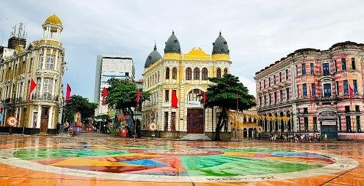
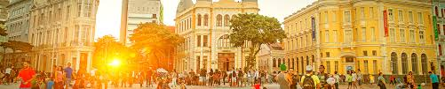

Marco Zero
Conheça Recife
O Marco Zero é um espaço público localizado no bairro do Recife, capital de Pernambuco. O Marco Zero é, literalmente, palco principal da maior festa popular do mundo: o Carnaval. Na lateral da Praça fica a estátua de bronze do Barão do Rio Branco, feita pelo escultor francês Felix Charpentier.
O espaço também é propício para se admirar os casarões antigos do bairro, com seus banquinhos e grandes árvores. A Antiga Casa de Banhos, próxima à praça, hoje foi transformada em bar e pode ser acessada inclusive de barco. A praça tornou-se palco de manifestações e apresentações artísticas. 